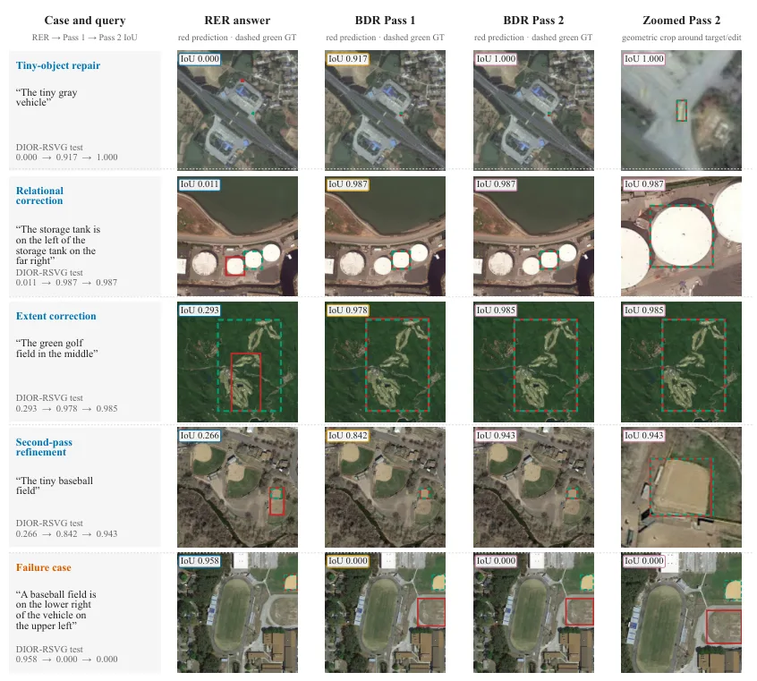
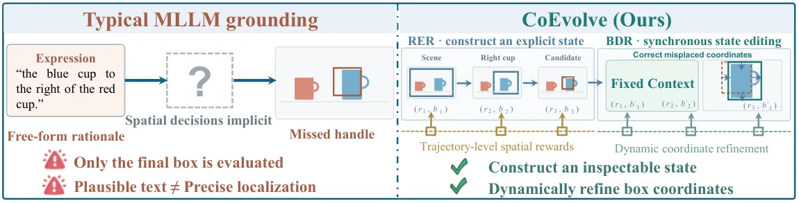
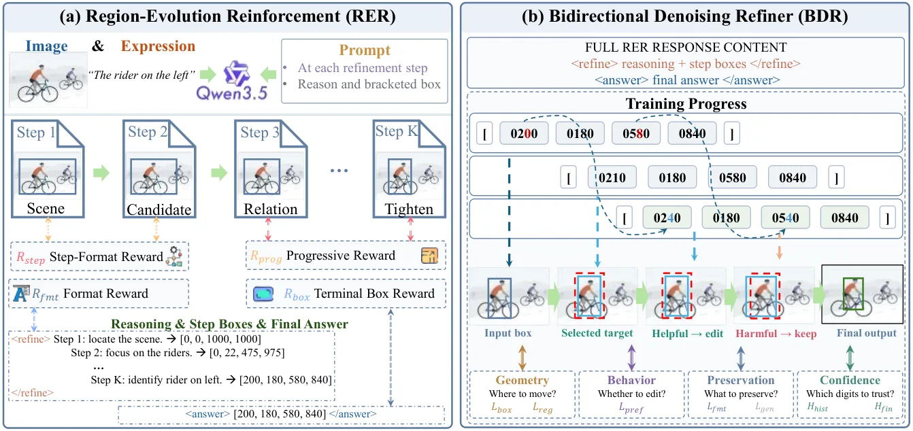
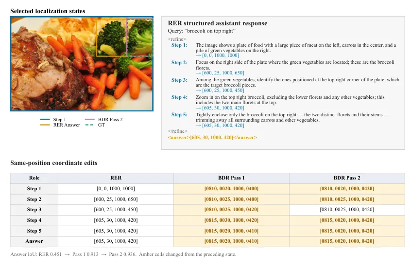

CoEvolve：用双向状态细化实现「构造-编辑」式视觉定位
CoEvolve: Construct-to-Edit Visual Grounding with Bidirectional State Refinement
把视觉定位拆成「显式候选区域构造（RER）+ 坐标字段双向编辑（BDR）」；八 split Overall Acc@0.5 92.41，受控破坏下单次 BDR 把 mIoU 从 58.80% 提到 86.19%、Repair@0.7 87.99%。
Acc@0.5
mIoU/Acc@0.9
mIoU
Repair@0.7
作者、单位与技术谱系 · Research context
作者与单位
研究脉络
- 多模态视觉定位 MLLM上游方向关系：把定位压缩为一次终端预测，是本方法要拆解的基线范式。[论文第 1 节]
- 自由形式推理链（rationale）方法上游方法关系：rationale 让推理语言化但未暴露可编辑空间状态，本方法用显式候选区域替代。[论文第 1 节]
- 本篇推进：构造-编辑 + 双向细化本篇推进关系：把定位拆成显式状态构造与受约束编辑，并给出几何/行为级监督。[论文第 1 节与结论]
合作网络
- 西安交通大学 ↔ 中科院空天信息创新研究院 跨机构署名Xi'an Jiaotong University → Aerospace Information Research Institute, CAS关系：共同署名[arXiv 首页署名]
- 对冻结 SAM3 的下游技术依赖CoEvolve 预测框 → SAM3关系：明确技术依赖[论文第 4.6 节]
作者与单位取自 arXiv 首页署名；脉络依据论文引用与自述；未发现公开代码声明，故不登记代码节点。
方法本质拆解 · What actually changed
是不是微调？
是在底座 MLLM 上训练新增模块/接口：RER 与 BDR 都需训练（论文给出分阶段目标与训练配置），BDR 针对不同状态来源分别从头训练。相比纯提示工程，它确实改变了模型参数与推理接口。
有没有额外约束？
编辑受几何级与行为级目标约束：几何目标提供目标几何监督，行为目标用扰动与质量门控目标提供『编辑偏好』；BDR 的硬约束是「坐标字段可编辑、推理文本固定」。坐标偏移被归一化加权，保留/编辑由质量门控决定。
推理/后端到底做了什么？
推理分两步：RER 生成渐进式含显式候选区域的轨迹（状态构造），BDR 再做一次双向同位置重建来细化坐标（状态编辑）。没有全局优化或因子图；编辑是可选的单次细化，且质量门控允许保留原状态。
方法本质是什么？
本质是把「一次性定位」拆成「可测量状态 + 受约束编辑」：显式候选使误差可诊断，双向同位置重建与门控使编辑只在有据可依时发生。它没有做的是语义级纠正（文本固定）与在线系统验证。
输入为图像+指称表达；改变的位置是把终端预测换成显式候选状态（RER）与坐标字段编辑（BDR）；约束/合并动作是几何/行为级监督 + 质量门控的保留或修正；直接效果是严格 IoU 与受控纠正场景下定位显著改善。

桥接价值Bridge
桥接价值
CoEvolve 把「定位」显式拆成可测量的空间状态与对它的编辑操作，并让编辑受几何与行为目标约束，这与我们关心的「状态要可诊断、修正要可验证」直接同构。它给出一个可迁移的判定范式：先给一个显式候选，再在保留/修正之间做有依据的选择，而不是一次性输出结果。
方法与模块Method
方法摘要
RER 把推理组织成渐进式语义-空间轨迹，每一步都提交一个显式候选区域，形成可编辑的初始状态；BDR 把推理文本固定为语义上下文，只对坐标字段做双向同位置重建，并用几何级（目标几何）与行为级（编辑偏好、质量门控目标）目标监督。推理时先由 RER 造状态、再由 BDR 细化，文本语义在编辑期保持固定。
可迁移模块
第一是可迁移的「显式状态构造」：把不可解释的终端预测换成逐步提交的候选状态，便于定位误差来源。第二是「质量门控的保留/编辑」策略：只在编辑大概率改善时才改，否则保留原状态——这可以直接借鉴到我们的滤波器/优化写回策略里，避免把错误修正写进系统。

证据Evidence
关键证据与数字
标准定位（论文表 1）：CoEvolve 八 split Overall Acc@0.5 为 92.41，比 Qwen3.5-9B 高 2.93 分，且在四个 split 第一、一个 split 并列第一。严格 IoU（论文表 2）：mIoU 85.72、Acc@0.7 87.94、Acc@0.9 68.64，Acc@0.9 分别比 CogVLM-Grounding-17B 高 4.19 分。受控纠正（论文 4.4 节）：在 30,969 个确定性破坏锚点上，单次 BDR 把 mIoU 从 58.80% 提到 86.19%、Repair@0.7 达 87.99%，比最强纠正基线 Qwen3.5-9B 的输出 mIoU 高 2.34 分。
边界与下一步Limits & Next Step
边界与风险
作者承认编辑并非对每个样本都改善：受控纠正里 BDR 使 15.50% 的锚点变差（Qwen3.5-9B 为 11.42%），说明『保留还是修正』的决策仍有残余错误。BDR 只编辑坐标字段、把推理文本固定，因此无法纠正无法用坐标修正解决的语义错误。此外论文未在真实机器人/在线系统上验证，结论仍限于图像级定位任务。
下一步实验
第一，在我们的定位/配准输出上引入「显式候选状态 + 质量门控编辑」，比较直接写回与门控写回的错误率。第二，复现 RER 的渐进式状态构造，检查它是否降低我们对失败样本的定位难度。第三，测编辑的保守性：扫描门控阈值，画『改善率 vs 恶化率』曲线，找出可接受的取舍点。





